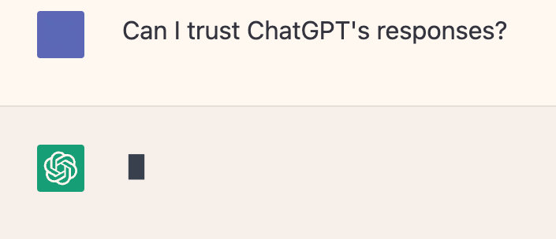

OpenAI’s ChatGPT has been a controversial topic of discussion over the past few months. Many have been quick to hail its positive implications for the future of tech. ChatGPT (and others of its ilk), which can mimic human speech and conversation, are ushering in a new era of Artificial Intelligence (AI). While previous iterations of AI have been exclusively in the hands of the rich and powerful, these new products are readily available to the public — although still controlled by centralized, proprietary companies. To many, this seems like a remarkable step forward, both in technological advancement, as well as AI’s accessibility to a broader group of people.
As CivicActions’ Chief Information Security Officer (CISO) with decades of experience dating back to the inception of the Internet, I can’t help but have some concerns about ChatGPT. Of course, this technology raises some legitimate philosophical questions, from “What cultural biases are built in?” to “Can it plan the perfect crime?” There is also the issue of Artificial Intelligence being a bit of a misnomer; ChatGPT is not intelligent — rather, it responds to queries using a massive pattern matching engine and presents a mashup of how others have responded to similar queries. But for simplicity here, I’ll call it “AI.”
However, for myself and people in my role who are entrusted with keeping websites and data safe, the biggest foreseeable issues with this technology are its implications for creating a less secure web. AI is imposing an increased security risk; for example, it can be used to personalize phishing emails (“spear phishing”) that not only look as if from known contacts but also include references to recent communications making their recipients less careful and more at risk of having malware installed on their systems. From a privacy standpoint, companies like Facebook, TikTok, Google and others have already been using AI and Machine Learning (ML) to use our data to create detailed profiles that direct us to the the articles we read, the people (or bots) we encounter on social media, and (of course) the things we want to buy.
As the amount of AI (and political and script kiddie) generated disinformation increases, both in our email inboxes and on our browser screens, now more than ever we need the ability to take charge of our online identity and be our own information filter. ChatGPT is joining the ranks of the (dis)information producers and, along with the search engine and social media enterprises, will quickly tell you what (they decide) you want to hear. At least ChatGPT is clear — if asked — that its responses are “generated by algorithms, which can sometimes produce errors or inaccuracies.”
This is not a new problem. A little over 20 years ago, I started an initiative called OpenPrivacy. The basic idea was that rather than allow external direct marketers to make money off our digital data, OpenPrivacy would allow users to profit from it directly and fully manage — through encryption techniques — who has access to what data, for which reasons, and for how long. The goal was to enable people to securely own their own identity as well as to support the ability to anonymously market portions of their accumulated persona online.
Since the users would be relatively anonymous to each other — at least until a formal introduction is made — building pseudonymous reputation and inter-entity trust is key. OpenPrivacy encapsulated this process in a Reputation Management Framework (RMF). For more background, learn more here (and please forgive the 22-year-old HTML). A desirable side effect of the OpenPrivacy network is that as trust networks grow, the overall quality of information increases and more valuable transactions can be supported.
While each individual can choose for themselves to remain in a corporate controlled bubble, some may prefer a personal information engine with which they can securely navigate the internet with personal privacy management, bias awareness, and fact checking built in. In this age of ChatGPT, an application that could help sift through the overwhelming amount of incoming information, red flag potential spam and malware, and collect trustworthy information would be extremely valuable. The intelligence will come from the human, and the “AI” will serve its purpose learning which patterns to match and creating a web of trust that can cut through the chaff and highlight trustable results. Perhaps it’s time to rethink OpenPrivacy — not so much as an anonymous digital marketplace, but more as a step toward obtaining useful information.